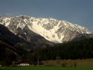
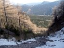
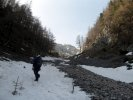

Schneeberg 2x
2016 · Slovensko, Vysoké Tatry
2 x Schneeberg
Je už pomaly koniec zimy a my márne čakáme, kedy v Tatrách všetko sadne ako má, aby sme zrealizovali nejaký veľký výstup. Kedže sa nechceme voziť v lavíne s neistým koncom, tak čakáme na vhodné snehové podmienky. Občas sa aj ukázali, ale ukázalo sa aj to, že sme sa na ten termín nevedeli dať dohromady my.
Ivan zasa nemôže a tak sa s Horárom rozhodujeme využiť dobrú predpoveď počasia pre náš blízky obľúbený Schneeberg. Obidva víkendové dni ma byť dobre, my si volíme sobotu. Horár má zavesený batoh na skalnom hrebeni Gamsgartgrat na Schneeberg. S našimi Horcovými kamarátmi sa o to už pokúšal dva krát, ale pre zlé počasie zatiaľ bezúspešne. Tentokrát by v počasí nemal byť problém, dokonca má byť veľmi teplo. Nakoľko je koniec februára, do akcie sa chystáme v zimnej výbave. Auto parkujem v Schneeberg Dorfli, na náš hrebeň, ale nevidíme, takže ani nevieme ako to v skutočnosti s lezeckými podmienkami bude. V Breite Ries je kopa snehu, takže je jasné, že berieme zimnú výstroj, veď vlastne ani inú so sebou nemáme J
Cesta začína pri veľkom hoff-e s lokálnou pílou, pri ktorej vždy ochkám, voňajúc haldy čerstvo napíleného dreva. Cesta lesom časom prechádza do kamenej šotolinovej muldy. Ked sa už chystáme odbočiť doprava, zbadáme rakúskeho sialpového ranostaja, ako vykresluje oblúky v Schneidergraben-ovom snehu. Nás čaká ešte pol hodinka traverzu lesom a následne 200 metrov brodenie v snehu a sme na nástupe. No už teraz nám je jasné, že s výstrojou sme to trošku prehnali. Namiesto zimných topánok do ľadu, by lezečky na skalu boli vhodnejsie. Hlavne preto, ze je to 5-ková cesta J. Počasie je krásne, plechové nebo. Hneď prvá dĺžka mi dáva riadne zabrať. Hoci je krásne slnečné počasie, skala je ľadová a po dolezeni na štand si necítim prsty. Ak to bude takto celú trasu, tak to bude teda zážitok. Ľutujem, že sme nešli v nedeľu, kedže malo byť vtedy teplejšie. No hneď nasledujúca dĺžka vedie na slnku a pre zmenu si zasa hovorím, že chvala bohu, že sme išli v sobotu J. Celá cesta je príjemná, len na piatej dlžke nastáva spestrenie, keď sa v 5-kovom úseku s čakanom na ruksaku, zaseknem v komíne. Ani hore, ani dolu. Veru dobre som sa tam vytrápil, Horár sa riadne vyrehotal, kým som sa odtiaľ dostal. Je to zlatý klinec dnešného lezeckého programu a našťastie aj posledná dĺžka v skale. Čas pokročil, je zrejmé, že na Fischer hutte nestíhame vystúpiť. Tak si to vysvetľujeme, že vlastne aj načo, kedže sme tam boli už veľa krát. Takže snehovým poľom naspäť k nástupu a po vlastných stopách k autu.
Máme za sebou skvelý deň aj keď očakávania boli úplne iné. Ale batoh je zvesený.





Je sobota 21.5 a spolu s Horárom vyrážame na prvé májové skalné lezenie do blízskeho Rakúska. Je to akcia z núdze, pôvodne sme totiž plánovali SZ hrebeň na GrossGlockneri, avšak v tej oblasti sa vytvorili také snehové podmienky, že zimné topánky meníme za lezečky a Glockner za Schneeberg. Naším cieľom je StadelWand a 12 dĺžková cesta Brunner weg.
Počas raňajkovej diskusie pri aute, preberieme ako zvyčajne všeličo. To, že okrem lezenia, už pred pár rokmi pribudli aj diskusie o zahrádkarských úspechoch horcových jednotlivcov je nám už známa vec. K drobnochovu sme sa zatiaľ ešte nedostali, ani rečami a ani skutkami. J S Robkom na Ministerstve vnútra moc nevychádzam a tak som sa ani oficiálne nepokúšal rozširovať naše športové aktivity aj o úžitkové. Avšak Horár tentokrát vedie diskusiu o včelárstve ( čuduj sa svete, nie o love na vysokú, srnčiu alebo diviačiu zver, akoby sa na správneho Horára hodilo J ) K včeličkám mám ja veľmi pozitívny vzťah, ktorý som si vybudoval hlavne cez vianočnú medovinu. Asi len predsa budem musieť na to Ministerstvo vnútra zájsť.
Nástup pod stenu je nám už veľmi dobre známy, nakoľko sme sa tu minule v šotoline riadne vytrápili. Teraz, poučení z minula, výšku poľahky naberáme na chodníku v lese.
Čo sa týka samotnej cesty, už sme tu liezli aj lepšie, skala hlavne v spodnej časti je pomerne drolivá, ale už sme liezli aj horšie terény. J Keď sme v druhej, či tretej dĺžke, zdola na nás kričia rakušáci a pýtajú sa na RichterWeg. To je priestor pre Horára, ten so svojoj úžasnou znalosťou nemčiny ( ovláda nasledovné slovká - ja, nein, ein-zwei-drei, bier ) ich dokonale nanaviguje J
Po dolezení poslednej ( po slovensky ostatnej ) dĺžky Brunnerweg-u, sme v očakávaní už iba ľahkého výstupu lesom. Avšak na naše prekvapenie, nič také nie je možné uskutočniť, nakoľko nás ešte čakajú ľahšie 3-4 dĺžky, no naštastie v pevnej skale cesty Stadelwandgrat. A až potom je na rade ľahká cesta lesom.
Zostup k autu je už v pohode, nakoľko za pol roka ho ideme tretí krát.


P.S. To záhradkárstvo a včelárstvo nemáme v činnosti klubu zapísané doteraz. Ale nikdy nehovor nikdy J
Dušan
Pôvodná stránka: archív horecsport.sk